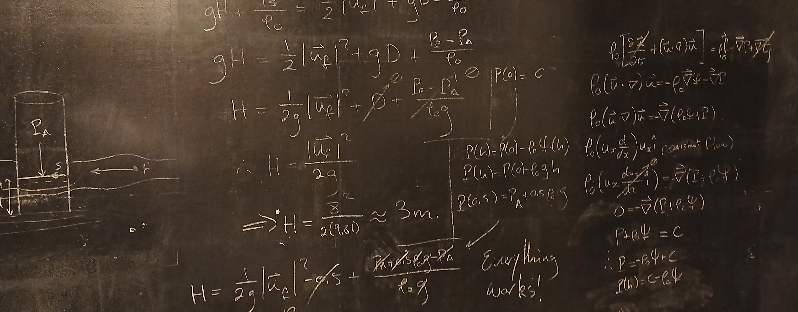
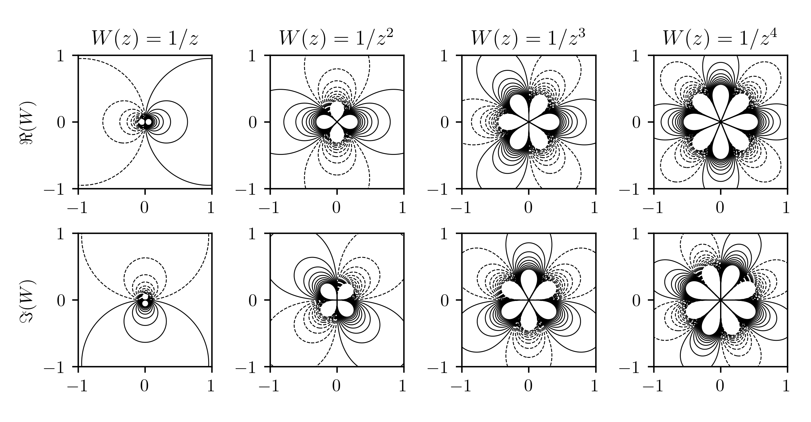
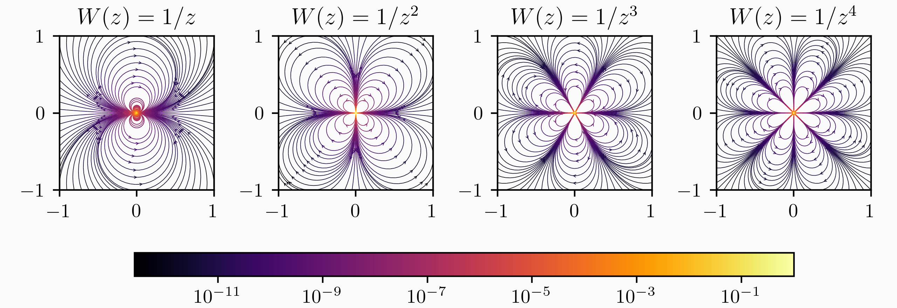
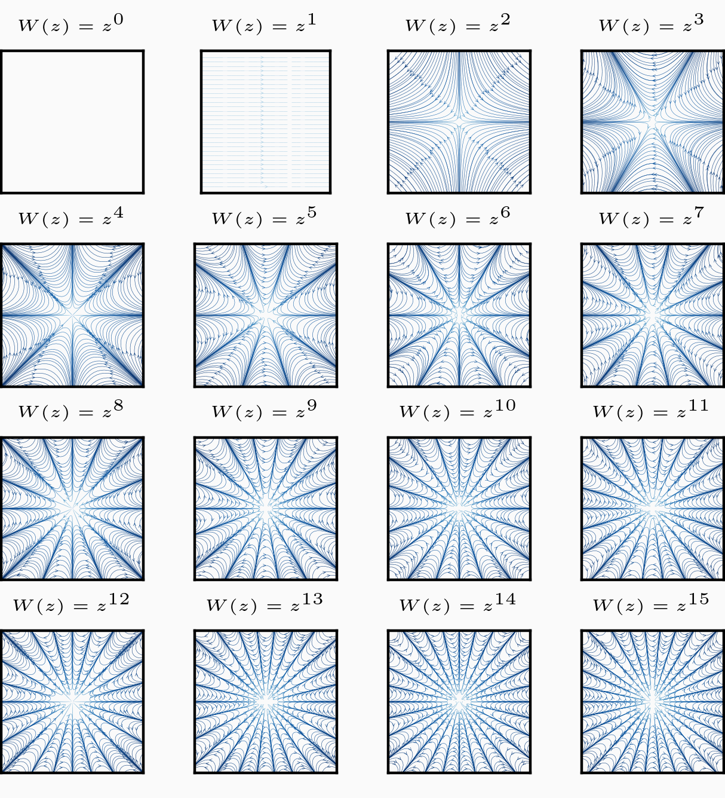
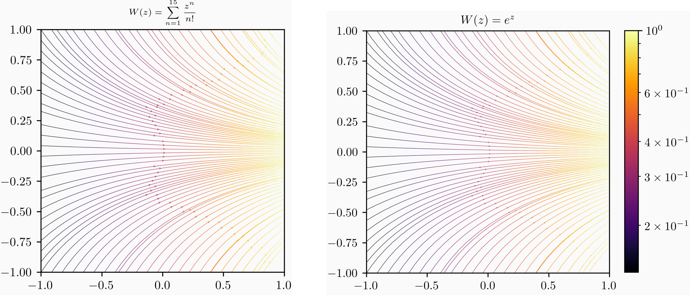
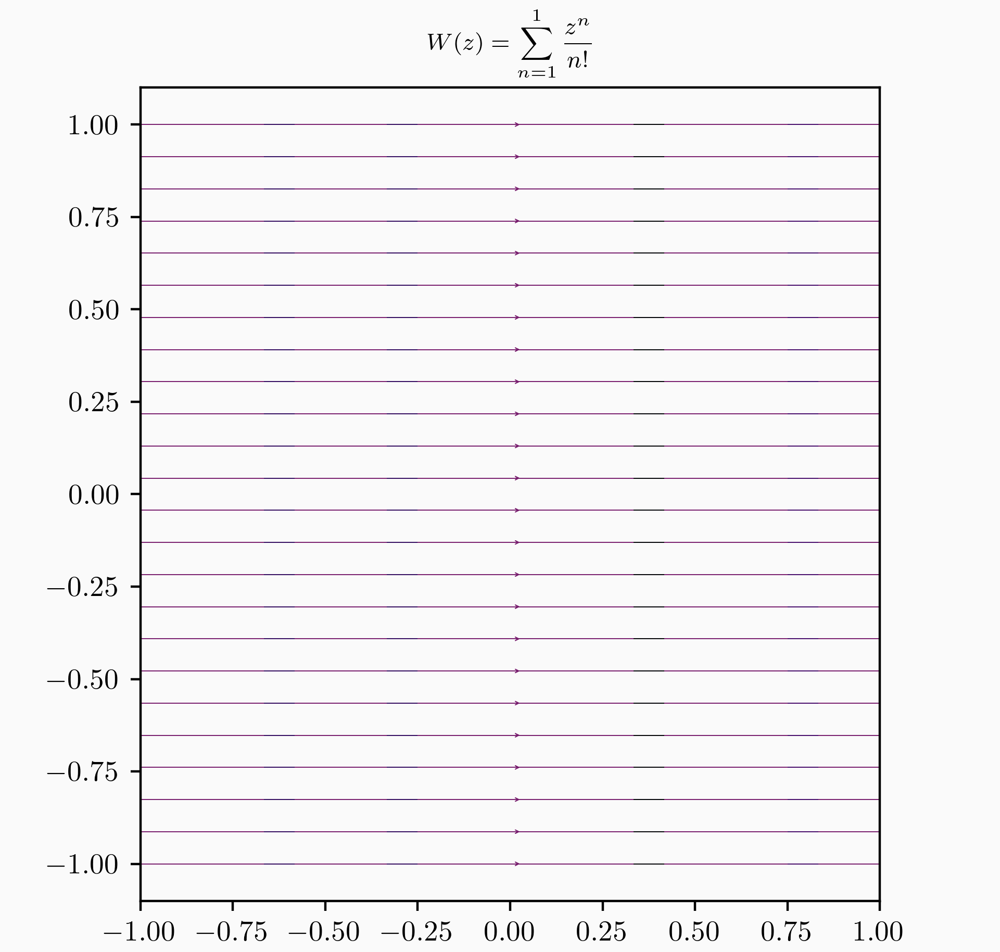

Complex Potentials

The Motivation
In the first semester of third year (2025), I took a class in fluid mechanics taught by Dr. Paul Watts. Overall, it was one of the most engaging modules I've ever taken, but in particular I became interested in modelling special types of fluid flow in two dimensions using complex potentials.
By taking an analytical shortcut through complex analysis, much of the computationally taxing simulations often associated with fluid mechanics can be foregone in exchange for a hit to the realism of the fluids and a loss of one measly dimension (which is good for my poor little computer.)
After my exams that semester, I set off in an attempt to program some software which could automatically do (and verify) the work which I had the joy of doing by hand, and to visualise more complex things, like heat flow, which would be unrealistically arduous to do by hand.
Some Theory
Restricting the Fluid
If we take a fluid and impose the restriction that it must be incompressible, then the mass continuity equation reduces to . As the divergence of the curl of any vector field is equal to zero, we can define a vector potential such that . If we then impose the further restriction that the fluid be irrotational, then the vorticity field must be zero everywhere: . Using similar logic as before, we can note that the curl of any gradient is always zero, and so a scalar potential can be defined such that . This scalar potential is usually called the velocity potential.
Note that there is some freedom when it comes to choosing a gauge potential here, but for now we will skirt around the conversation regarding gauge fixing and let all gauge potentials equal zero.
In the quest to make these fluids as unrealistic as possible, we're going to make one more restriction. Restrict the fluid to only be defined in two dimensions, spanned by the standard orthonormal basis in — . Okay, no more restrictions for now! Everything has fallen into place and we're ready to make a really cool connection.
Let's write down the velocity field component-wise using these potentials. The velocity potential is easy: Let's do the same for the vector potential: However, the fluid is only able to flow in the xy-plane, so and all derivatives with respect to equal zero as well, as the velocity of the fluid can't change in that direciton. So, the curl of the vector potential reduces to Note that the vector potential now only has a -component. This means we can simplify the notation a bit, as the -component of the vector potential is the magnitude of , we can simply let . The scalar function is usually called the stream function of the fluid.
Now we can equate the components of the velocity field in terms of the velocity potential on one side and in terms of the stream function on the other: This set of conditions, called the Cauchy-Riemann conditions turn out to be quite important in complex analysis.
The Cauchy-Riemann Conditions
Not all complex functions play nice. In particular, differentiability on the complex plane is always going to be a concern. Imagine, however, we define a function where the two composite functions are real and differentiable at some point. It turns out that if those functions conform to the Cauchy-Riemann equations and have continuous parital derivatives, then the function only depends on and is is complex differentiable at that point. This means that we're dealing with a locally holomorphic function, which makes working with the function much nicer. In particular, holomorphic functions are integrable over any curve on the complex plane, which could become relevant later on. Interestingly, for this project, we can actually also work with functions which have isolated singularities, as we will filter those points out later on — making the function truly holomorphic. A point to stress is that the satisfaction of Cauchy-Riemann conditions guarantees the existance of a function only in terms of and not in terms of . Those function which can be writen in terms of the conjugate are, in general, not holomorphic.
There are two main take-aways from this. Firstly, if our velocity potential and strem function satisfy the Cauchy-Riemann conditions, then we can describe both of them simultaneously using a complex potential. Secondly, this complex potential will be holomorphic, i.e. it will behave nicely.
Finding Streamlines
The name "stream function" isn't just a coincidence, we will see now that there is a fundamental conection between the stream function and the streamlines of the fluid.
Streamlines are lines which are always parallel to the velocity field, giving the impression that they're smoothly connecting the field together. In fact, as long as the fluid is flowing steadily, a particle in the fluid will follow a given streamline along its journey.
Recall that we can write the velocity field as partial derivatives of the stream function: This means that we can write the gradient of the stream function in terms of the components of the velocity Let's now take the inner product between the velocity field and the gradient of the stream function. So, the gradient of the stream function is always perpendicular to the velocity field. This means that the level curves of the stream function are tangent to the velocity at every point, as these level curves are also always perpendicular to . This gives us a nice way of visualising the path of fluids. Find the stream function, then set it equal to some constant, the curves described by the resulting equation will give a different valid streamline for each constant. This is sometimes simple enough (from a computational point of view) to do by hand. In general, we can use a computer to solve for these curves (which is one of the aims of this project.)
Extracting Information from Complex Potentials
Now that we have a connection between velocity fields, stream functions and complex potentials, we can start exploring by reversing our thinking. Rather than creating complex potentials from the way fluid flows, we can instead discern the way fluid flows from some complex potential. The exciting thing is that as long as this function is in terms of alone, there will always be a corresponding flow. So, we can think of any arbitrary function and find the flow associated with it. Sometimes this will be a simple enough association to do the work manually, but here we'll create a program which takes a complex potential as input and gives visualisations of the flow as output.
Creating the Program
For this project, I made great use of the holy trinity of thrown-together personal projects — Python, Matplotlib and NumPy. Python is the language which I am most proficient in (other than English maybe), and it's abstract enough for changes to be made in a flexible way, i.e. I had the freedom to screw up and discover things, and the project would flex with me. Sometimes I like setting off with a rigid plan and fulfilling it as closely as possible, and other times I prefer to throw down the idea and mould it on the potters wheel, so to speak. There are pros and cons to both types of project, and in this case I feel it was a hybrid of both. I had all of the theory worked out in my head before setting off, but I worked out how to program most of it during the development.
Real and Imaginary Components of
Fundamentally, the flow of the fluid is dictated by the real and imaginary components of the complex potential. is the velocity potential , whose gradient is the velocity field . is the stream function, whose level curves describe the streamlines. In theory, both of these components are required to describe the flow, the stream function describes the path along which fluid moves, and the velocity potential descibes the direction of flow along that path.
Computationally, these two components are very easy to deal with. We can simply define some complex variable for the complex potential, then extract the real and imaginary components. NumPy has an intuitive
function, numpy.gradient(), which returns the descrete gradient field of an inputted array (our velocity potential field). To plot the level curves of the stream function, we can simply use a contour
plot, which does just that. In this case, I usedmatplotlib.pyplot.contour(). As an example, below are plots of the real and imaginary components of the complex potential, where
is defined to be the reciprocal of integral powers of
.
Visualising Flow
In a sad turn of events for the streamfunction, it turns out that only the velocity potential is required computationally to fully visualise the flow of the system. PyPlot's in-builtstreamplot() function can create visualisations of streamlines if given the velocity field alone.
This tuned out to be the easiest and most attractive way to merge the path and direction information. Using this function, we can even use a colour-map to colour the plot based on some parameter (the obvious one to choose here being the speed of the fluid.)

Here, the speed is given relative to the maximum speed in the field.
For these above reciprocal potentials, there is an isolated singularity at
which Python would obviously complain about. At first, I ignored the problem by simply not including the origin in the meshgrid. This works alright for the functions detailed above, but for other functions, singularities might not be at the origin. That's assuming we can even pre-program in where the singularities are, for more complicated expressions,
it could be very tough to to find them, we should really have a fail safe in case the program does encounter a singularity. This led to the other solution, a try-except clause during the calculation of the potential which catches the Numpy FloatingPointError which is thrown when dividing by zero. This error is a bit tricky to catch, as Python
will return NaN rather than throwing an error (which will later cause the gradient function to sample outside its domain and throw its own error), so np.seterr(all="raise") was used to force the program to raise a catchable error.
Finding the singularities as they come up turns out to actually be the nicest part of this problem, as now we have to decide how we're actually going to deal with them. At first, the solution was to let the potential take on the maximum value found anwhere else in the function. One issue with this method is that it tends to be inaccurate if the singularity is
found early-on in the indexing, as it's possible that a larger value is still yet to be found. Another issue is that, with smooth potentials, the largest value tends to be only one step away from the singularity, and so the gradient suddenly becomes zero at the singularity, where ideally the magnitude of the gradient should rise monatonically towards it. Ultimately,
however, it was found that it actually doesn't matter all that much. If the resolution of the meshgrid is high enough, then one outlying value won't rock the boat all that much — Pyplot's contour() and streamline() functions are sophisticated enough to recognise and resolve these points. The area around a singularity tends to be quite extreme
when compared to regions further away anyway, and so it was found that setting the function to a constant (I chose zero) at every singularity makes no difference to the visualisation as long as the meshgrid is dense enough.
These potentials are particularly pleasant to me, but theres a swathe of other interesting and pretty flows out there for us to admire. Before we depart from our reciprocal friends, however, we can take a look at how their flow changes as we sweep through values of (even the never-before seen non-integer values!)

Visualising a Basis of All Flows
As all holomorphic functions are analytic, we can represent them in the form of a Taylor series. This means that the natural powers of (and ) form a complete basis of every holomorphic function. Let's visualise the flow corresponding to the first sixteen of these basis functions.
A colorbar scale has been foregone here, as these complex potentials will be multiplied by some coefficient in the power series anyway. Also note that, since the flow only depends on the derivative of the complex potential, adding a constant
wont change the flow at all. This is why the flow corresponding to this complex potential has a velocity of zero everywhere. Just for fun, let's try to approximate an analytic function with these 16 basis potentials. To do this somewhat accurately, we'll need a function which has large low-order components so that we can
encapsulate most of the behaviour of the function in only the lowest 16 basis functions. The function
is perfect for this purpose. Not only are the exponential function and its Taylor expansion nice because they are very well-known, the factorial in the denominator of the expansion ensures that the series converges very quickly and allows us to approximate the function well with only a few low-order basis functions.

In reality, we only need about the first eight powers of before no difference can be seen in the region above. We can see this if we look at the flow after each contribution.

This is all quite nice. If we use all of the
potentials we've created (where
Under Pressure!
As we're working with a perfect and irrotational fluid with no body force applied to it, we can use my favourite version of bernoulli's principle to state that
Here, we're only really concerned with the shape of the pressure function, rather than absolute values. With the number of assumptions we've made, we're way beyond that now. For the same reason, we can use some natural units and let . This let's us write Bernoulli's equation as a function for pressure in terms of the fluid's speed alone. This is great, as if you were particularly eagle-eyed earlier you would have seen that the entire project up until this point was concerned with finding the velcoity field of these types of fluid.